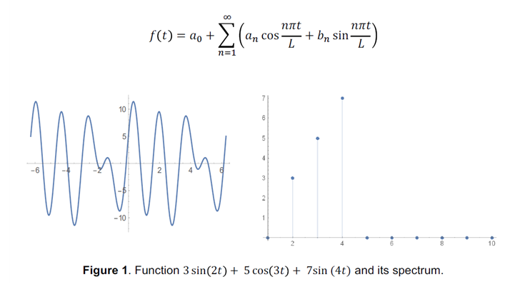
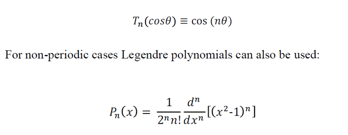
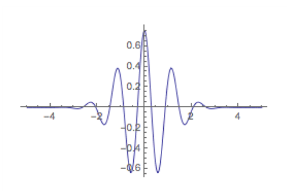
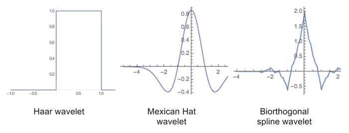
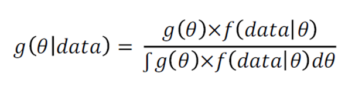
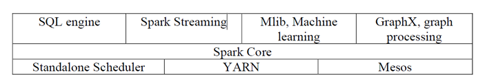

EEG분석을 위한 분석 도구 리뷰
Review of analytical instruments for EEG analysis
This is "Review of analytical instruments for EEG analysis" ,
Please Click here to view the original. here
Please Click here to view the Translate. here
[Abstract]
EEG를 1926년에 사용한 이후로, EEG는 뉴로사이언스의 가장 유명한 도구가 되었다. EEG데이터를 사용하기 위해, 우리는 EEG뿐만 아니라 우리의 데이터가 무엇을 의미하는지 이해하기위한 몇몇 분석도구와 스킬이 필요하다.
이 기사는 몇 개의 고전적인 분석 툴과 단지 몇 년 전에 나타난 새로운 분석도구를 묘사한다. 우리는 인지적인 EEG분야에서 작업을 시작하기 위한 모든 연구자를 위해 분석도구가 유용해지길 소망한다.
[Introduction]
지난 수십년동안, 통계량은 상당히 증가했다. 왜냐하면 추상과 수학이 적용된 새로운 연구가 수행되었기 때문이다.
겉으로 들어난 컴퓨터 및 www의 창조는 통계적인 분석을 위한 중요한 역할을 수행해왔다.
Bayesian 분석, Monte-Carlo simulation, FFT, wavelet분석 spline 보간법(interpolation), 일반화된 선형/additive 모델들, 기계학습과 같은 강력한 방법들이 적용될 수 있다.
왜냐하면 우리는 저렴하고 빠른 컴퓨터를 가지고 있기 때문이다. Bayes 함수와 같은 몇몇 방법들은 19세기 또는 20세기 초에 밝혀졌지만 이러한 방법들은 어려운 실용도구였기 때문에 사용이 불가능했다.
지난 10년 동안 우리는 과학, 공학, 빅데이터(지난 몇 년동안 가장 현대적이고 인상 깊은 컴퓨터 과학기술) 분야에서 기계학습 방식의 폭발하는 성장을 보였다. 매일 과학 커뮤니티 세계는 민들 수 없는 양의 정보를 생산한다.
그것은 데이터뿐만 아니라 새로운 방식, 이론, 컨셉, 적용이 포함된다. 우리는 “데이터의 바다”로 향하기 위해, 가장 실용적이고 분석적인 절차를 위한 새로운 구조를 필요로 한다.
이러한 목적을 위해 우리는 현대방식의 개요를 제공하고 어떻게 이러한 방법의 그룹들이 상호관련 있는지 보여주길 원한다. 우리는 EEG데이터 분석을 위한 그것의 적용과 데이터마이닝을 위한 구조를 제안한다.
[Layer 1: 대상 영역- 기본적인 인지적 EEG 컨셉 ]
인간의 뇌는 복잡한 전자적인 패턴을 생산한다. 기본 EEG기술을 위해하기 위해, neuron Oscillations와 전기활성(electroactivity)에 관한 유용한 책이 존재한다.
다음과 같은 책은 EEG신호의 기초 생물물리학(Nunez & Srinivasan, 2006)에 관한 학습 포인트를 잡기에 좋다. 그 작가는 작든 크든 전기 발생기, 수동 볼륨 전도, 기록 전략, 스펙트럼 분석,
소스 위치 파악 등을 감추었다.
만약 당신이 물리학(전기 및 자력)에 몇몇 배경적인 지식을 가지고 있다면 이런 참조 도서는 너에게 유용한 것임을 증명할 것이다.
진동의 신경생리학 구조의 소개과정은 Buzsaki의 책(Buzsaki, 2006)에서 찾을 수 있다. 인지적인 EEG에서 디자인 실험과 구조에 관한 일반적인 정보를 위해 당신을 Luck(Luck, 2005)의 책을 읽을 수 있다.
당신은 EEG분석에 관한 포괄적인 책을 Cohen의 책(Cohen, 2014)을 통해 접할 수 있다. 작가는 인지적 전기생리학의 특징에 관한 개괄과 통계적인 추론 실험을 위한 도구를 준비함으로써 많은 실용적인 질문들을 다룬다.
[Layer 2: 전처리]
시계열 분석은 과학과 공학에서 긴 역사를 가지며 수학적 배경지식을 가진 방법의 거대한 set이다.
우리는 시계열의 시각적인 표현을 볼 때, 우리의 데이터 특징을 이해하기 위해 노력한다. 데이터의 그래픽 조사는 기능의 본성과 특징을 위한 주요열쇠를 준다.
심지어 간단한 그래픽 관찰(정점, valleys, 기간, 선형 트렌드)은 우리의 연구에서 우리를 도울 수 있다. 열린 눈으로 원시데이터 조사를 대체할 수는 없다.
데이터 사용을 시작하기 전에, 우리는 종종 특정 전처리과정이 필요하다: 소음제거, 잡음제거 그리고 오작동 채널, 원본필터링 그리고 높은 주파수, 기준선(baseline)적용 등
데이터전처리에 관한 상세한 것은 Luck(Luck, 2005)와 Cohen(Cohen, 2014)의 책에서 알 수 있다.
전처리 후에, 우리는 분석은 다른 모든 방법을 사용하는 것을 시작할 수 있다.
[Layer 3: 분석적인 분해. 스펙트럼 분석과 TDA ]
퓨리에 분석: 퓨리에 분석은 오래되었다기보다는 분석의 가장 정교한방법이다.
시간기반에서 주파수기반 영역의 변환 신호를 위한 수학적 기술이다. 어떤 함수 에서, 우리는 선형조합에서 를 분리할 수 있다.

한쌍인 (a,n)과 (b,n)은 신호의 스펙트럼 형태를 지닌다. 그림 1은 함수의 예제이며 이 함수의 스펙트럼 분해형태이다.
퓨리에 분석의 기술은 넓게 알려져 있고, 긴 역사가 있어왔다. 우리는 고전적인 통계방법인 베이지안과 현대기술 그리고 위상학적 데이터 분석 이 두 가지를 사용함으로써
우리는 스펙트럼을 분류할 수 있다.
그러나 EEG신호와 함께 퓨리에 변환을 사용하기 위한 몇가지 제약사항들이 존재한다.
퓨리에 분석은 정상(nationary)과 선형신호에 적합하다 왜냐하면 Sin 파형은 시간위치(Time localization)가 없기 때문이다.
그러나 EEG 신호들은 비정상 속성을 가진다. 시간 영역에서 주파수 역학의 표현은 쉬운 일이 아니며 그것의 의미를 직관적으로 이해하는 것은 어렵다.
이러한 제약사항 때문에, EEG분석에서 wavelet을 사용하는 것이 더 낫다.
[직교다항식]
직교다항식: 분해를 위한 기본함수를 선택하는 절차를 위한 다음 단계는 “Chebyshev 다항식” 이다.
우리는 부분미분등식의 이론인 Chebyshev 다항식을 알아감에 따라, 그 해답이 공간적으로 더 정기적이지 않다면, 거의 모든 경우에 스펙트럼 분리를 위한 더 나은 선택을 할 수 있다. Chebyshev다항식은 다음등식에 의해 정의된다.

직교다항식의 이론은 여전히 개발되고 있다. 그리고 이 이론은 매일 실용적으로 사용하기 위한 계산이 빠른 방식에 의해 지원된다.
우리는 스펙트럼 분리를 위한 EEG분석에서 몇몇 다항식을 활용하도록 노력한다.
왜냐하면 우리는 물리학을 알아감에 따라 때때로 시스템에서의 기본적인 변화가 연구된 현상의 단순한 그림을 제공할 수 있다.
예를 들어, Gautschi의 연구노트에서 직교다항식 이론의 현대적인 상태의 개요를 볼 수 있다.(Gautschi, 2006) 작가는 많은 계산적인 현대다항식을 위한 매트랩 함수 라이브러리를 제공한다.
[Wavelets]
wavelets: sin(x)와 cos(x)파형들은 시간영역에서 localized되지 않았다.
대조적으로 wavelets들은 좋은 시간 localization을 가진 작은 파형들이다. 예를 들어, Morlet wavelet은 가우스와 sin(x) 두 가지 기능으로 구성되었다.


[splines]
splines: De Boor가 B-Splines를 수치계산방식으로 소개한 후에(De Boor, 1972), Splines은 과학계와 공학계의 많은 영역에서 널리 퍼졌다.
Splines을 위한 빠른 계산과 쉬운 구성절차는 그것들을 많은 수치실험에서 유용한 툴로 만들었다.
spline의 구성에서 첫 번째 단계에 따라 우리는 기능의 간격을 나누었다. 이 기능은 대략 하위간격 N으로 우리는 설정했다.
그리고나서 우리는 각 하위간격 n, n=1...N을 위한 다항식을 할당했다. 세 번째로, 우리는 모든 인접한 다항식을 함께 결합하여 조각 별 다항식 곡선을 형성한다.
다항식에 합류하는 점을 매듭(knots)이라고 한다. 매듭 점의 다항식은 연속성 제약 조건을 충족해야한다.
즉, 이 점에서 미분 할 수 있어야 한다. Splines는 현대분석 방식에서 몇 가지 역할을 한다.
첫째, Splines는 보조실체로 널리 사용된다: wavelet구성에서 비정기적인 기능의 근사와 삽입을 위해.(그림4에 생물학적 기원의 spline wavelet을 볼 수 있다. )
기능적인 데이터 분석(Functional Data Analysis, FDA)에서 B-Spline들은 Hilbert-Huang 변환과 같은 기본함수로써 사용되고, 그것들은 IMF 구현을 위해 사용된다.
정기적인 Spline들은 FFT(고속 퓨리에 변환)로부터 속도계산과 Spline들의 근사능력을 조합한 Spline Harmonic Analysis를 위해 적용될 수 있다(Zheludev, 1998)
[blind source separation 및 ICA]
지난 20년 동안, blind source separation 는 원격통신, 디지털 신호처리, 생체의공학, 재무자료분석, 천문학적 영상학 등과 같은 몇몇 분야에서 널리 적용되어왔다.
BSS의 목적은 센서 배열로부터 신호의 몇몇 알려지지 않은 Source들을 획득하는 것이다. 고전적인 문제는 두 마이크로폰에 의한 두 가지 source로부터 신호를 분리하는 것으로 알려져 있다.
ICA(Independent Component Analysis)는 관찰된 신호들의 숨겨진 파라미터를 나타내는 BSS의 첫 번째 기술 중 하나이다.
그러나 우리가 EEG분석에 대해 알아감에 따라 ICA와 Hilbert-Huang 변환 실증적인 모드 분리의 한 부분으로써 널리 사용된다.
ICA방식은 본래의 Source들이 통계적으로 독립적이고 Informax, MLE(Maximum Likelihood Estimation), maximun a posterior,
빠른 ICA 와 같은 몇몇 잘 알려진 알고리즘을 사용하는 것을 가정한다. EEG분석에서 ICA방식은 원본데이터로부터 종종 잡음(artefacts)을 제거하는데 사용된다.
BSS 툴의 현대 SET은 매우 풍부하고 실증모드분리, 압축센싱, 요인분석, 사전학습과 같은 방식으로 이루어져 있다.
기계학습과 함께 BSS의 현대적인 방식 강력한 툴을 연구자와 공학도들에게 제공할 수 있음을 우리는 생각하는 바이다.
[Hilbert-Huang 변환]
신호가 비정상적이고 비선형일 때, 미리 정의된 함수의 어떤 set은 좋은 결과를 줄 수 없다.
이러한 경우 우리는 우리의 분석을 위한 적응기반이 필요하다. 그것은 적응기반은 데이터 또는 데이터 의존성과 관련이어야 함을 의미한다.
Hilbert-Huang변환은 복잡한 데이터 유형을 위한 몇 가지의 문제를 푼다. (Huang el al, 1998). HHT는 Hilbert 스펙트럼 분석과 실증모드분리(EMD) 두가지로 이루어져있다.
EMD는 적응신호분리를 특성의 합, 복잡한 파형을 묘사하는 외벽(Intrinsic blocks)(intrinsic mode functions IMF))으로 된다.
EMD는 여전히 엄격한 이론적인 수립이 부족하다 그것은 간다하지만 실증적인 알고리즘이 아니기 때문이다.
HHT는 이런 방식의 수학과 이론에서 몇몇 문제에도 불구하고 적용분야에 널리 사용된다.
[TDA]
위상데이터 분석은 단지 몇 년 전에 나타났다. 그것은 수학의 한 분야인 위상대수학 기반이다.
그것은 역학과 컴퓨터과학과 연결된 분야다. 지속적인 동질성(homology)은 위상데이터 분석의 주요 컨셉이다.
어떤 데이터는 구조를 가지고, 위상은 그들의 특성을 위한 몇가지 핵심을 우리에게 줄 수 있다.
우리는 지속적인 동질성을 사용하여 데이터를 간단한 복잡소지수로 바꿀 수 있다.
그리고 나서 우리는 그것들을 바코드라고 불리는 Betty numbers의 매개변수가 있는 형태로 변환한다.
만약 디지털 EEG데이터가 시간 또는 주파수 영역에서 보여진다면, 우리는 점의 군집화를 받는다.
그 때 이러한 군집화의 형태는 우리에게 뉴런활동의 특성에 대한 정보와 함께 우리에게 제공된다.
계산을 위한 알고리즘은 R의 저장소인 CRAN과 MATLAB에서 구현한다.
TDA의 몇 가지 컨셉을 소개하기 위해 당신은 Edelsbrunner and Harer의 책을 볼 수 있다(Edelsbrunner and Harer, 2008).
[Layer 4: 합성 및 매끄러운 방법. 통계적인 방법과 FDA]
고전적인 통계학: 고전적인 통계학은 어떠한 유형의 분석을 위해 기본적이고 발달된 강력한 툴을 제공한다.
평균, 표준편차, 4분위수와 같은 간단한 기술적인 통계학은 거의 모든 데이터 조사에서 사용될 수 있다.
가설 실험, P-value, 신뢰구간들은 사용이 쉽고, 통계적 추론의 강력한 도구이다. 우리는 초기데이터 분석단계에서 함정(Pitfalls)을 피하기 위해 우리는 그것들을 사용한다.
Chisquared test과 같은 통계적인 독립 시험인 변수의 분석(ANOVA)과 상관관계는 우리의 데이터에서 관련성을 찾도록 돕는다. 독립구성분석(ICA)과 같은 현대적인 방법을 이해하기 위해 우리는 정보이론에서 몇 가지 배경지식이 필요하다.
[Bayesian statistics: 베이지안 통계는 단지 베이즈 이론에 관한 하나의 툴]

이 방식은 고전 통계학과는 몇 가지 차이점이 존재한다.
- 고전적인 또는 빈번한 통계는 우리가 분석한 데이터에 관한 어떠한 사전지식을 의미하지 않는다. 베이지안 통계는 데이터에 프로세스가 포함되는지에 관한 정보와 프로세스에 관한 이전 정보를 사용한다.
- 베이지안 방법은 파라미터 예측가능성의 계산을 위한 정확한 툴을 제공한다.
- 베이지안 통계학은 효과적으로 성가신 파라미터를 무시한다.
베이지안 이론의 반복적 사용은 우리의 이전지식으로부터 모든 불가능한 가설을 제거한다. 끝으로 우리는 단지 가장 유망한 결과를 받을 것이다. 베이지안 분석에 관한 실용적인 현대적 소개는 Kruschke의 책에서 찾을 수 있다. (Kruschke, 2011)
[일반화된 선형/첨가물 모델]
이전 값에 관한 현재 값의 의존성은 인접한 점들 사이의 상관관계를 설명할 수 있다. 시계열 분석은 자동상관관계 및 교차상관관계 함수와 같은 방식들을 사용한다.
그것들의 ARIMA와 같은 현대적인 수정사항은 1970년에 Box와 Jenskins에 의해 소개되었고, 그 후 일반화된 모델을 사용한 선형함수는 상당히 성장했다.
선형모델들은 임의의 에러 구성 성분의 합과 예측을 위한 선형조합으로 나타내는 통계적 응답모델이다. 일반화된 선형모델(GLM)은 선형모델의 선형성이 약하다.
그것들은 예언자의 미분방정식에 따라 응답하는 예측 값을 따른다. 일반화된 첨가모델(GAM)은 시계열 분석에서 선형성으로부터 다음단계이다. 이들은 예측 인자가 직선 매개 변수 형태가 아닌 부드러운 함수의 합이 되도록 허용하며, 차별성이 제한적일 수 있다.
선형성에서 비선형 성으로의 진화는 한편으로는 유연성과 overfitting 사이의 균형이며, 다른 한편에서는 모델 해석 가능성이다. R의 구현과 함께 GLM/GAM에서 소개를 위해, 당신은 Wood의 책을 읽을 수 있다.(Wood, 2006)
[FDA]
기능적인 데이터 분석은 무한차원에서 다변수 데이터의 일반화이다. 그 데이터 결과는 곡선적이고, 표면 또는 다른 연속적인 복소 객체로 표현할 수 있다. FDA용어는 Ramsay and Dalzell, 1911년에 의해 기사에서 처음 소개 되었다. 이러한 프레임워크는 기능적인 분석, 변형미적분, 통계로부터 아이디어와 컨셉을 위한 몇 가지 방식을 포함한다. FDA컨셉은 다음의 기준(Creteria)에 의해 특징짓는다:
-기능적인 데이터는 연속적이다
-데이터의 개별단위는 하나의 함수이다.
-데이터의 부드러움은 이러한 분석의 주요양상 중 하나이다.
-이러한 함수의 유도는 종종 중요한 역할을 한다.
-주요구성성부분류는 중심컨셉 중 하나이다.
FDA 기술들의 포괄적인 소개를 위해, Ramsay and Silverman2005 책을 보아라.
[Layer 5: 기계학습]
지난 수십년 동안, 기계학습 사용의 방식은 급격히 증가해왔다. 이러한 방식들은 전문가 시스템, 뉴론 네트웍, 베이지안 통계, 패턴인지 등으로부터 최선을 다해왔다. 기계학습의 컨셉은 4 가지 주요 원칙에 기반 해있다.
Data: 우리는 학습을 시작하기 전에, 우리는 미리 모아진 데이터가 필요하다. EEG의 경우에 몇몇 EEG장비, 입력인터페이스, 데이터를 모으기 위한 데이터저장소가 있어야만 한다. 어떠한소음, 잡음, 그리고 잘못된 것으로부터 그러한 것들을 제거함으로써 전처리하는 것은 매우 중요하다. 그러나 데이터를 수집하고 저장하는 것이 다음 단계로 넘어 가야한다는 것을 의미하지는 않는다.
Abstraction: abstraction단계에서 우리는 데이터로부터 어떤 종류의 구조를 고립시키는 것을 시도한다. 데이터들은 아마 그래프, 그림, 수학적 수식, cluster, 논리 규칙 등을 연결하거나 연결이 끊어져있을지도 모른다. 이 단계에서 우리는 데이터를 보고 우리에게 의미 있고 명백한 것을 확인하려고 노력한다. 하늘에 별자리를 뿌리는 고대 사람들처럼, 우리는 또한 데이터와 긴밀한 관계를 추구한다. 예를 들어 EEG의 경우 스펙트럼에서 신호를 분해하고 더 나은 통계 분포를 찾으려고 노력한다. 그러나 여전히 이것은 완전한 지식이 아니며 어떤 경우에는 전혀 지식이 아니다.
Generalization: 하나의 데이터 집합에 대해서만 얻은 추상화된 지식을 적용하면 그다지 유용하지 않다. 좋은 모델은 과학과 공학의 많은 분야에서 사용될 수 있다.
Evaluation: 마지막 단계 동안 우리는 우리의 알고리즘에 새로운 데이터셋을 적용했다. 보이지 않는 데이터에 대한 완벽한 일반화는 매우 드물다. 많은 경우 데이터의 노이즈로 인해 오류가 발생한다. 모델에 노이즈를 포함시키면 시스템이 과도하게 커질 수 있으며 더 나쁜 방식으로 데이터의 실제 패턴을 인식 할 수 있다. 이를 "오버 피팅" 문제라고 한다.
기계학습의 모든 방식은 2개 그룹으로 나눌 수 있다: 지도학습과 비지도학습.
지도학습방식은 예측 가능한 통계모델 생성과 관련 있다. 비지도학습의 경우 모델이 없지만 우리는 입력데이터 내부 연결과 구조를 식별가능하다. 기계학습알고리즘은 몇몇 작업을 해결한다: clustering, classification
clustering은 탐구의 데이터분석에서 첫 번째 작업이다; 원본데이터는 조사를 위해 어떤 그룹으로 나누어져야 한다. 클러스터링 이후, 우리는 범주형의 데이터와 데이터셋 이름을 위한 분류를 할 수 있다. R에서 소프트웨어 구현과 함께 기계학습 소개를 위한 책은 James, Witten, Hastie, Tibshirani, 2013과 Lantz,2013, Weka에서 (Witten, Frank , Hall 2011),매트랩에서 (Theodoridis&Koutroumbas 2008)을 보면 된다.
기계학습의 EEG방식에서 지난 십년동안 널리 사용된 것은 예를 들어, (AlZoubi, Calvo , Stevens 2009), (Sohaib, Qureshi, Hagelback, Hilborn 2013), (Hohne, Bartz, Hebart, Muller and Blankertz 2015)
[Layer 6: Big data]
지난 몇 년 동안 빅 데이터는 데이터 분석에서 새로운 키워드로 등장했다. EEG 데이터는 5 V가 빅 데이터의 공식 체계에 적합하지 않다 (Demchenko, Grosso, De Laat 및 Membrey, 2013). 5 V는 다음과 같다:
- 음량
- 속도
- 다양성
- 가치
- 진실
EEG 데이터는 분명히 "너무"크지 않으며 본성을 구조화한다.
Big Data는 동시 계산을 위한 여러 가지 흥미로운 도구를 제공한다. 예를 들어, Hadoop 클러스터는 방대한 양의 데이터를 처리 할 수 있는 시스템을 만들 수 있는 기회를 제공한다. Hadoop 환경에서 가장 흥미로운 구성 요소 중 하나는 Apache Spark이다.
이것은 대규모 데이터 처리를 위한 오픈 소스, 고속, 범용 엔진이다. Apache Spark는 Map-Reduce 모델을 확장하고 다양한 처리 유형의 작업 부하를 결합 할 수 있게 한다. Spark에는 Python, Java, Scala, R 및 SQL에 대한 API가 있다. 그것은 다음과 같은 구조를 형성하는 여러 가지 통합 된 부분들로 구성된다.

하나의 프레임 워크에서 SQL 엔진, 기계 학습, 라이브러리, 그래프 컴퓨팅 도구 및 분산 프로세스의 스케줄러를 통합하면 상대적으로 작은 데이터 세트에 대해서도 뇌파 분석을 위한 새로운 기회를 제공 할 수 있다.
[Software tools]
Matlab: 현대의 데이터 분석은 컴퓨터 프로그램 없이는 거의 불가능하다. 신경 과학 데이터 배열에서 너무 커서 수동으로 처리 할 수 없다. DSP (디지털 신호 처리)에서 MathWork Matlab은 사실상 표준이다. Matlab은 선형 변환 절차를 가지고 있으므로 선형 대수학 응용에 사용되는 주요 기능이 있다. Matlab은 도구 상자 (사용자 응용 프로그램 패키지)의 생성 및 현대화를 위한 스크립트 프로그램 언어 및 메커니즘을 갖추고 있다. Matlab에 대한 일반적인 소개는 (Sizemore and Mueller, 2014) 읽을 수 있다.
EEG 분석을 위해 과학 공동체는 많은 응용 프로그램 (도구 상자)을 만들었으며 새로운 프로젝트는 매년 시작된다. 우리는 EEGLab, FieldTrip, BrainStorm 중 몇 가지를 목록화 한다. EEGLab은 시도하기 위한 좋은 시작점이다. 그것은 정교한 구조와 시계열 및 독립적 인 구성 요소 분석을위한 강력한 방법을 가지고있다. (Delorme and Makeig, 2004), (Delorme, Makeig, Debener and Onton, 2004) (Makeig and Onton, 2011).
많은 현대적인 파일 형식에서 데이터를 읽을 수 있다. http://sccn.ucsd.edu/wiki/EEGLAB_Wiki에서 편리하게 참조할 수 있는 튜토리얼로 워크샵에서 얻은 비디오 자료를 사용하면 며칠 만에 실제로 사용이 가능하다. 또한 EEGlab에는 ERPLab와 같은 이벤트 관련 잠재력 (Lopez-Calderon and Luck, 2014), 뇌 컴퓨터 인터페이스 디자인 및 분석을 위한 BCILab과 NFT-3D-Head 및 소스 위치 모델링, MobiLab-Mobile brain / body imaging (Moorm) 등 (Delorme et al., 2011)을 위한 20개의 구체적인 플러그인이 존재한다.
Python: 파이썬은 과학 연구 도구 중 하나로 알려진 스크립트 프로그래밍 언어이다. 많은 구현과 거대한 개발자 커뮤니티가 있는 무료 오픈 소스 프로젝트이다. 많은 리눅스 배포판에 설치되어 있다. 파이썬 중앙 조정 사이트 https://www.python.org, 온라인 튜토리얼을 이용할 수 있다. 또한 라이브러리 보관소도 마련되어 있다.
파이썬 과학 스택 SciPy (http://www.scipy.org)는 Anaconda (http://store.continuum.io/cshop/anaconda), Enthought Canopy (http://www.enthought.com)와 같은 배포판에서 얻을 수 있다. ), Python (x, y) (http : // pythonxy. github.io) 등의 다양한 라이브러리를 사용하여 데이터 분석 및 복잡한 계산을 위한 인기 있는 라이브러리 모음을 제공한다. 파이썬으로 데이터 분석을 소개하려면 (McKinney, 2012)를 참조하라. Ipython 및 NymPy 라이브러리, Pandas 데이터 구조, 데이터 조작 및 집계, 시각화, 일부시 계열 시계 분석 기술을 다룬다. EEG 분석 을 위해 파이썬에는 MNE-Python (http://martinos.org)과 같은 라이브러리가 있다.
이 기능의 일부는 원시 데이터 시각화, epoching, 평균화, SSP 예측을 통한 잡음 제거, ICA, 순방향 모델링, 선형 역변환, 희소 역변환이다. 예를 들어 EEG 분석 영역에서 MNE-Python을 사용하는 경우 (Gramfort et al., 2013)를 참조하라. 또 다른 라이브러리 PyEEG (http://pyeeg.org)는 파워 스펙트럼 밀도, 페트로 시안 프랙탈 차원, 히구치 프랙탈 차원, hjorth 이동성 및 복잡성, 허스트 지수, 변동 분석 및 기타와 같은 흥미로운 기능을 가지고 있다. 실제로 논문에서 패킷을 사용하는 예 (Bao, Liu, and Zhang, 2011).
R: 통계 계산 및 그래픽을 위한 자유 소프트웨어 환경이다. R 오픈 소스 프로젝트이며 사이트 https://www.r-project.org의 여러 운영 체제에서 무료로 사용할 수 있다. 선형/비선형 방법, 통계 테스트, 클래식 및 베이지안 통계 방법, 분류, 클러스터링, 기계 학습 라이브러리를 포함한다. R용 패키지는 많은 그룹과 개별 연구원을 개발하고 유지한다. https://cran.r-project.org/web/packages에서 찾을 수 있으며, 각 패키지는 일반적으로 코드, 문서 및 일부 예제 데이터 배열을 포함한다. EEG 연구, icaOcularCorrection, eegAnalysis와 같은 몇 가지 패키지가 개발되었다.
현대의 데이터 분석 방법에 대해서는 R (James et al., 2013)의 좋은 소개. Stanford, Lagunita, https://lagunita.stanford.edu에서 온라인 MOOC 과정 "통계 학습"을 수반 한 서적. 저자는 선형 및 다항 회귀, 로지스틱 회귀 및 선형 판별 분석, 교차 유효성 검사 및 부트 스트랩, 모델 선택 및 정규화 방법, 비선형 모델, 스플라인 및 일반화 된 덧셈 모델, 트리 기반 방법, 임의 포리스트 및 부스팅, 지원 벡터에 대해 설명합니다. 기계 및 기타 방법. R (Matloff, 2011) (Wickham, 2014)의 프로그래밍 언어로 소개 및 참조.
Weka: 데이터마이닝을 위한 알고리즘 학습 알고리즘 100대가 넘는 스택이다. 뉴질랜드 와이 카토 대학 (http://www.cs.waikato.ac.nz/ml/weka)에서 개발 된 무료 오픈 소스 Java 응용 프로그램이다. 기계 학습 그룹 (클러스터링, 분류, 회귀, 속성 선택, 연관 규칙 찾기 등)에서 일반적인 문제를 해결할 수 있다. Weka 소프트웨어의 보조 도서 (Witten et al., 2011), Waikato 대학에는 Weka를 실제 작업 (https://weka.waikato.ac.nz/dataminingwithweka)으로 사용하는 것에 관한 MOOC도 있습니다. 자바 크로스 플랫폼 객체 지향 언어는 사용자 정의 알고리즘 구현을 위한 강력한 도구가 될 수 있다. Weka는 데이터 처리를 위한 구성을 설계하고 알고리즘의 매개 변수를 변경하며 통계 테스트를 처리하는 데 도움이 되는 3 가지 GUI를 제공한다. 이 모든 기능 덕분에 Weka는 실제 데이터 마이닝을 시작할 때 낮은 점수를 얻을 수 있다. EEG 분석을 위해 Weka를 사용하는 예는 (AlZoubi et al., 2009), (Sohaib, Qureshi, Hagelbäck, Hilborn, 2013)을 참조하라.
[Resume: 요약하다]
현대적인 통계상의 방식과 그 방식의 계산 구현은 몇가지 레이어 구조 형태의 알고리즘과 툴 컨셉의 생태시스템을 확인했다. 각 레벨은 엄격한 경계가 없으며 상호간에 상호 연관되어 있다. 이 시스템은 수학, 컴퓨터과학, 통계학에서 새로운 연구자와 함께 항상 성장한다. EEG 분석을 위해 우리는 이 성장하고 복잡한 구조에서 이동하는 데 오리엔티어가 필요할 수 있다. 우리는 이 논문에서, 현대적인 분석 분야를 개관하고 분류한다. 이 과학 분야의 새로운 연구자들에게 "분석의 마비"를 피할 수 있기를 바란다.